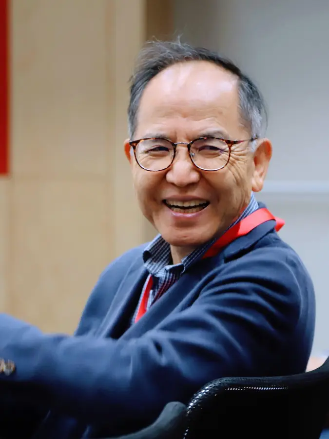
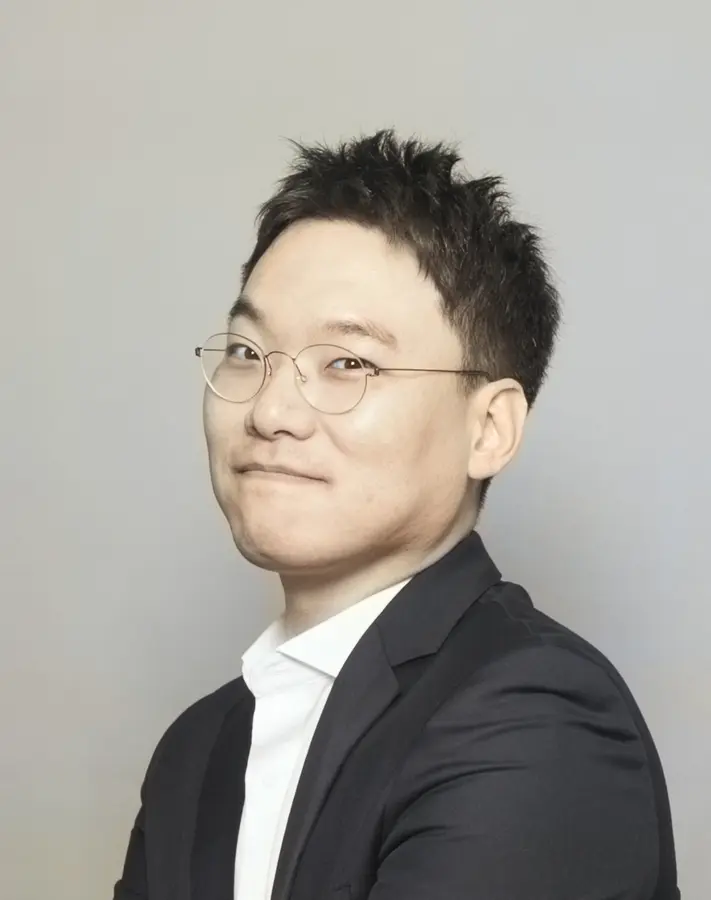
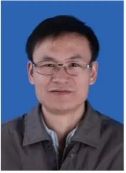
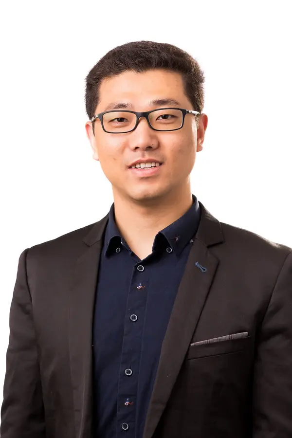
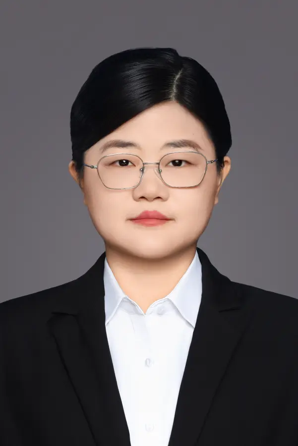
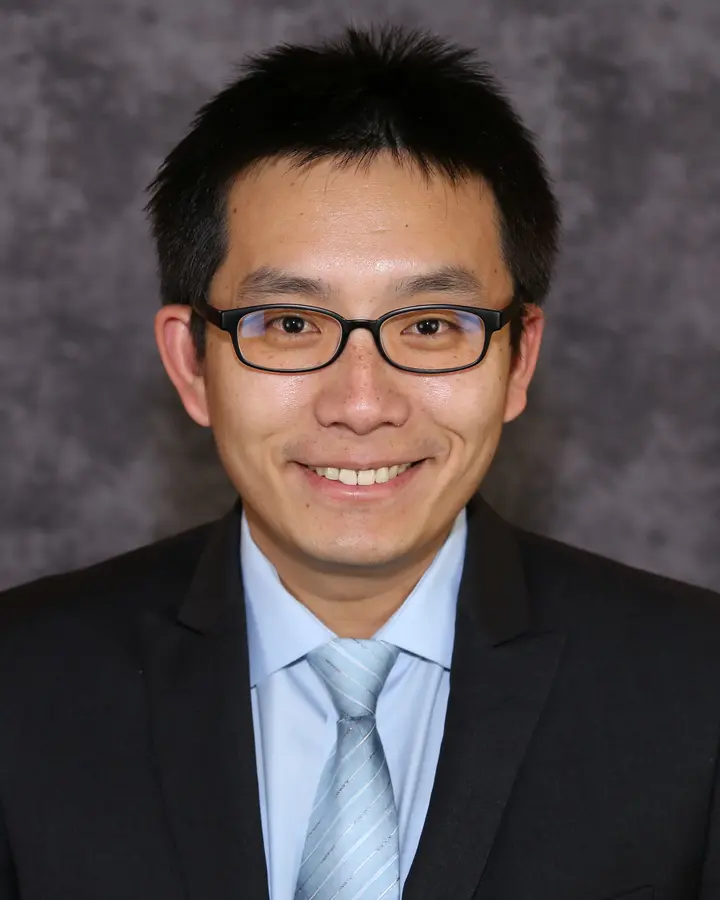
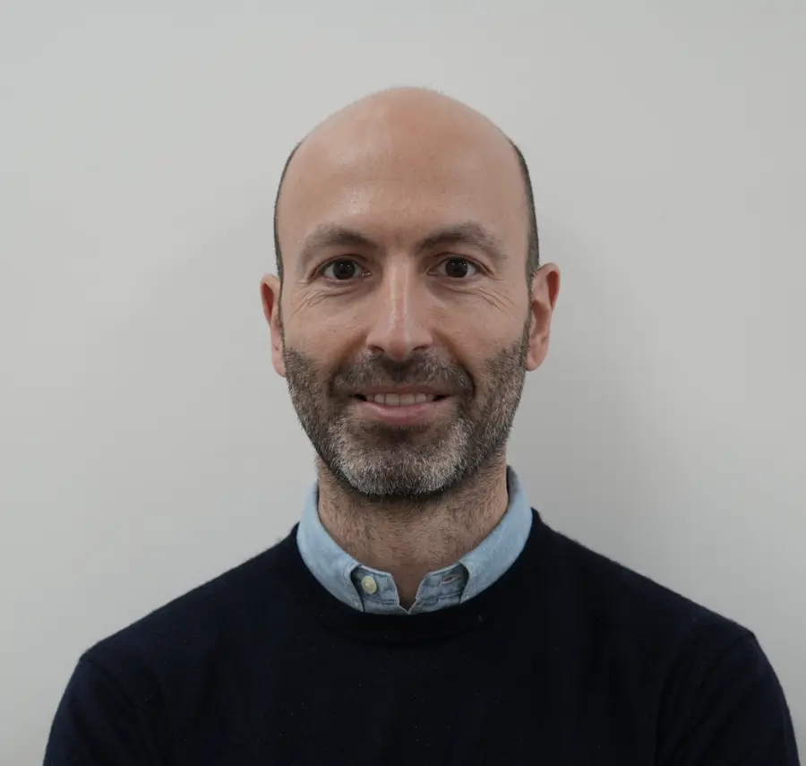
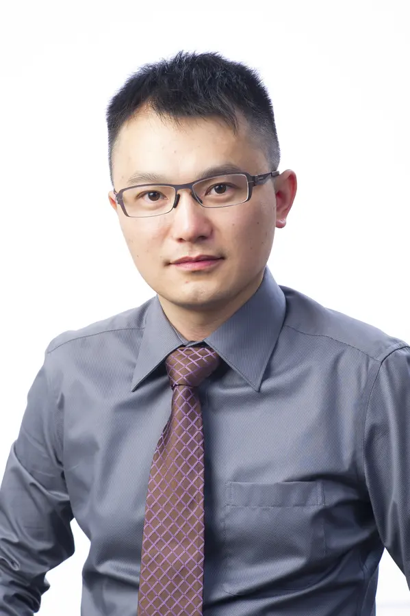
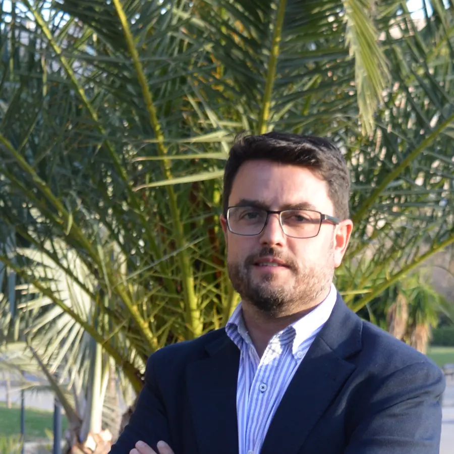

Biography
Biography forthcoming.
Speakers & Committee
Confirmed plenary speakers
Biography forthcoming.

Professor Jones is the John F. Brock III School Chair and Professor of Chemical & Biomolecular Engineering at Georgia Tech. He leads a research group working on materials, catalysis, and adsorption. He was the founding Editor-in-Chief of ACS Catalysis, served eight years as Vice-President of the North American Catalysis Society, and is now Editor-in-Chief of the open-access multidisciplinary journal JACS Au.
His research includes materials that extract CO2 from ultra-dilute mixtures such as ambient air, which are key components of direct air capture (DAC) technologies. He currently serves as President of the International Adsorption Society. His work in catalysis and separations has received awards from the American Chemical Society, the American Institute of Chemical Engineers, and the North American Catalysis Society. He is a member of the US National Academy of Engineering.

Randy Snurr is the John G. Searle Professor of Chemical and Biological Engineering at Northwestern University, where he served as Department Chair from 2017 to 2023. He holds BSE and PhD degrees in chemical engineering from the University of Pennsylvania and the University of California, Berkeley, respectively, and conducted postdoctoral research at the University of Leipzig with support from the Alexander von Humboldt Foundation.
His honors include the Institute Award for Excellence in Industrial Gases Technology from the American Institute of Chemical Engineers, the Ernest W. Thiele Award from the Chicago Section of AIChE, a Humboldt Research Award, and election as a corresponding member of the Saxon Academy of Sciences and Humanities. He has been named a Highly Cited Researcher by Clarivate and is an associate editor for the AIChE Journal. His research interests include nanoporous materials for energy and sustainability, molecular simulation, machine learning, adsorption separations, diffusion in nanoporous materials, and catalysis.
Confirmed keynote speakers
Biography forthcoming.

Katsumi Kaneko is Distinguished Professor at the Institute for Aqua Regeneration, Shinshu University. He was Professor of Physical Chemistry in the Graduate School of Science at Chiba University until 2010, when he joined Shinshu University. He received his Doctor of Science from the University of Tokyo in 1971 and has published more than 550 papers in international journals. He served as President of the International Adsorption Society from 2004 to 2007 and is a Fellow of the Royal Society of Chemistry, the International Adsorption Society, the American Carbon Society, and the Chemical Society of Japan.
His research examines how atoms, molecules, and ions adapt to highly restricted nanoscale solid spaces. His contributions include characterization methods for nanoporous carbons, nanospace materials science, quantum molecular sieving, water-vapor adsorption in hydrophobic nanoporous carbons, separation of heavy oxygen isotopes, graphene nanowindows for air separation, and graphene-wrapped crystal membranes for energy-efficient separation and energy storage.

Dong-Yeun Koh is an Associate Professor of Chemical and Biomolecular Engineering at KAIST, where he leads the Membranes, Materials, and Machine Intelligence Laboratory. His research integrates advanced materials, process engineering, and artificial intelligence to develop sustainable molecular-separation technologies, with a particular focus on membrane processes, sorbent-based carbon capture, direct air capture, electrified regeneration, and autonomous experimentation.
He also serves as Deputy Director of the Saudi Aramco–KAIST CO2 Management Center. He received his PhD from KAIST and conducted postdoctoral research at Georgia Tech.

Donghui Zhang’s research at Tianjin University focuses on gas separation, including molecular simulation, multiscale simulation and process enhancement, process optimization, and the development and industrial application of key gas-separation equipment.
The work also covers the development and industrial application of distillation and crystallization processes.
Confirmed invited speakers

Guoping Hu is a professor at the Ganjiang Innovation Academy, Chinese Academy of Sciences. He earned his bachelor’s degree from Shandong University and his PhD from the University of Melbourne. In 2022, he founded his independent research group at the Ganjiang Innovation Academy.
His research focuses on chemical separations through adsorption and solvent extraction, with an application-oriented emphasis on carbon capture, critical-metal extraction, and related fields. He is also exploring AI-driven design of novel materials for high-efficiency separation. He has published more than 70 peer-reviewed papers, serves on the Education Committee of the International Adsorption Society, sits on several journal editorial boards, and has received awards including the IACC-ISPT Carbon Capture Future Leader Award.

Song Li is an Associate Professor in the School of Energy and Power Engineering at Huazhong University of Science and Technology. She earned her PhD in Chemical Engineering from Vanderbilt University in 2014 and subsequently conducted postdoctoral research at Northwestern University.
Her research focuses on adsorption cooling, hydrogen production, and comprehensive utilization of fuel-cell-based power systems. She has led multiple key research projects, including two NSF grants and three subprojects under China’s National Key R&D Program. Her honors include the Heritage Prize from the Li Foundation, the Chutian Scholar Award from Hubei Province, and Vanderbilt University’s Distinguished Graduate Research Award. She has published more than 100 papers, with more than 4,800 citations and an h-index of 38.

Li-Chiang Lin is a Professor of Chemical Engineering at National Taiwan University. He received his PhD from UC Berkeley and conducted postdoctoral research at MIT. His group develops and applies computational methods to study porous materials for energy-related applications such as separation. He has published approximately 150 articles and has an h-index of 52.
His honors include the 2026 Young Chemist Award from the Chemical Society of Taiwan, the 2025 Outstanding Young Scholar Award from MRS-Taiwan, the 2024 Outstanding Young Scholar Award from T2CoMSA, the 2023 PCCP Emerging Investigator Lectureship Award from the Royal Society of Chemistry, the 2023 Ta-You Wu Memorial Award, the 2022 Outstanding Young Scholar Award from the LCY Education Foundation, and the 2021 Yushan Young Fellow award. He has appeared in the World’s Top 2% of Scientists list for six consecutive years and serves as an Editor for Chemical Engineering Journal.

Ronny Pini is Professor of Multiphase Systems in the Department of Chemical Engineering at Imperial College London. With more than 15 years of experience studying carbon capture and storage technologies, his research seeks solutions for decarbonizing the energy and chemical sectors. His laboratory specializes in chemical processes incorporating porous solids, including gas separations, from pore-scale characterization through process design and optimization.
He received the International Adsorption Society Award for Excellence in Publications in 2016 and was named to the sixth annual class of influential researchers by Industrial & Engineering Chemistry Research in 2022. He serves on the Board of Directors of the International Adsorption Society and is Associate Editor of the Journal of Chemical & Engineering Data.

Jin Shang is a Professor in the School of Energy and Environment at City University of Hong Kong, where he leads the Adsorption Separation Laboratory. He earned his PhD in Chemical Engineering from the University of Melbourne and subsequently conducted postdoctoral research at the Cooperative Research Centre for Greenhouse Gas Technologies, the University of Melbourne, and the Georgia Institute of Technology.
His research advances adsorption-based gas separation for carbon capture and removal, natural-gas purification, air separation, and toxic-gas abatement. He discovered the molecular trapdoor mechanism, recognized as the fourth major adsorption-based separation mechanism, which enables non-size-based molecular sieving. His honors include the 2024 Carbon Capture Award for Excellent Research and the 2022 ISTP-Bogen Young Scientist Award. He has published more than 150 papers, received over 9,900 citations, achieved an h-index of 57, and has been listed among Stanford’s top 2% most-cited scientists.

Joaquín Silvestre Albero holds a degree and a PhD in Chemistry from the University of Alicante. His research focuses on porous materials, mainly activated carbons, silicas, and MOFs, for applications in adsorption, gas separation, catalysis, and biomedicine. His group also studies gas hydrates confined in nanoporous materials and the structural flexibility of MOFs.
He has co-authored more than 210 publications in high-impact international journals and several book chapters. He currently coordinates the European CLEANWATER project and participates in the MOST-H2 and WAVEE projects. He is also Chief Research Officer of OMIX SL, a start-up devoted to converting biomass residues into value-added fertilizers.